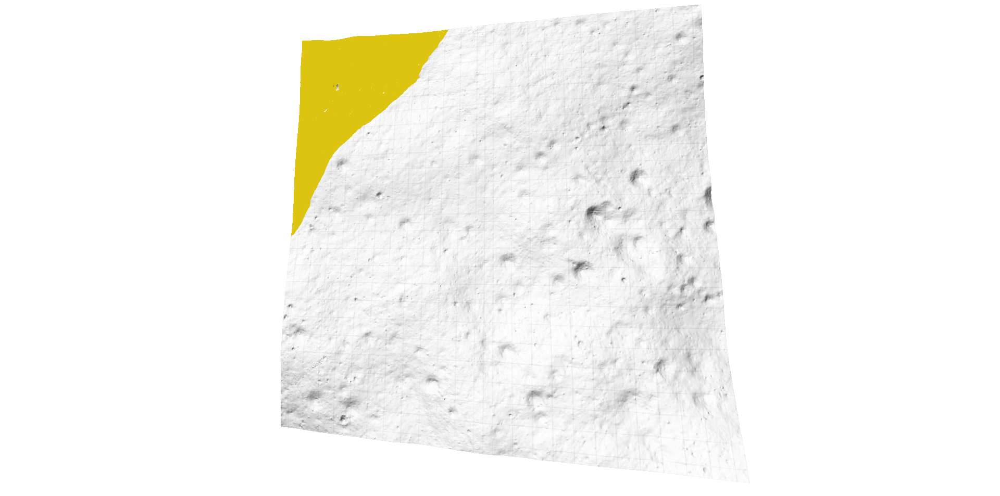
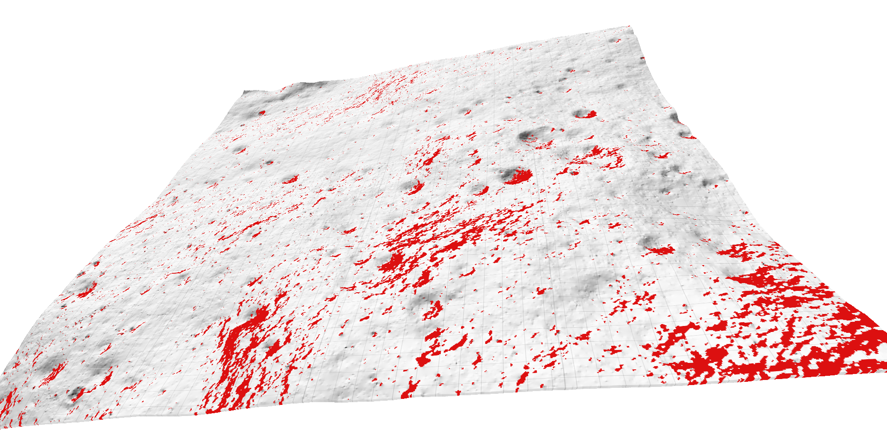

Using radar penetration depth models and dielectric constant inversion, we estimate the total volumetric mass of water-ice trapped in the regolith within the top ~5 metres of the lunar surface.


Generated from the OHRC Digital Elevation Model (DEM). A cost map flags steep crater walls, boulders, and persistent shadow zones to guide the rover away from danger.